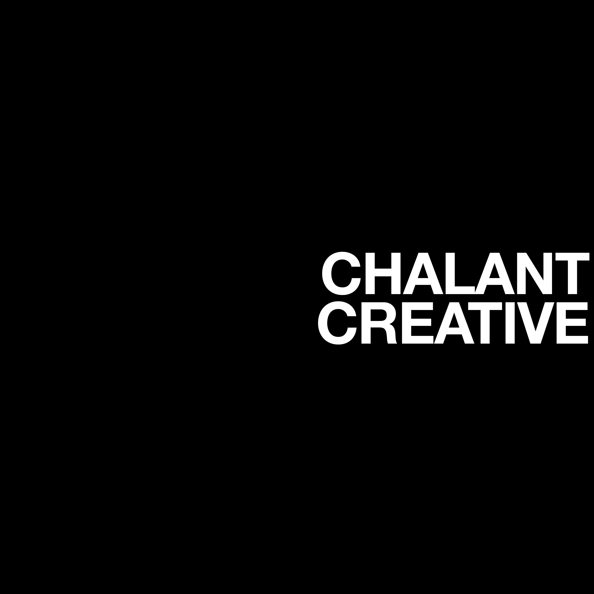

Entertain the massesStop the scroll
Educate the interestedTeach
Sell the committedCash in
A video you post today can bring you business months from now.
We write, produce, and distribute content people can keep finding. Each piece has a job: introduce your business, explain what you offer, or give someone a reason to buy.
Results
The first thirty days. Organic only.
For a DFW hospitality client, CHALANT built a new account using an organic content strategy and a no-ad creative campaign.
114,586
Views in 30 days
-
22,459
Viewers
-
5,346
Profile visits
-
3,268
Interactions
-
288
Link taps
-
150 → 647
Followers, +331%
-
54.3%
of views from non-followers
-
86
Pieces of content in month one
The readings we have. No daily series was recorded, so the line only connects these three points. The time axis is approximate; the mid-tenure figure is not a dated reading.
Share of views across Reels, Stories, and feed posts.
Share of views from existing followers and from people who were not already following.
From Instagram’s rolling 90- and 30-day totals as of November 17, 2026. Each bar is that window’s total divided by its days.
Source: Instagram Insights, last 30 days through Oct 30, 2026.